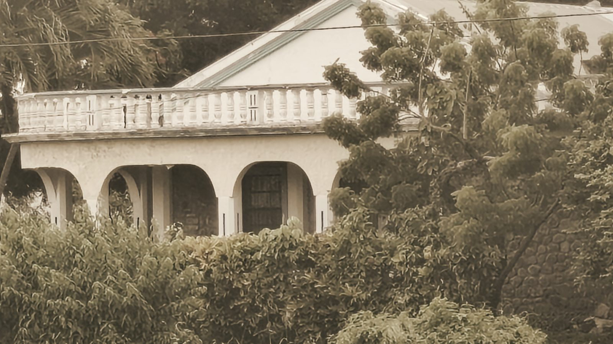

Thinking · The house
To let or not to let
My parents' house at Simon could be a private family home, or it could be a house that pays its way. Both are serious options, and the family hasn't chosen yet. These are the arguments as I understand them, for and against each.
Rob Berkeley · October 2026
The question
Mum and Dad built the house from stone already on the land, salvaged from the old water mill and the Georgian houses at the heart of the village. The walls are half a metre thick. A hurricane hit midway through the build, and they carried on. Today it stands empty, sound in its bones and failing everywhere else. Left as it is, the realistic end is a sale. So the real question is what shape the house should be in once we've rescued it.
When I set this out for the family, I drew two shapes over twenty years.
Option one: a private home
We make the house sound: roof, cracks, rewire, plumbing, septic, windows, shutters. The kitchen and finishes follow if the money stretches. It's used by the family when we're there.
For it. It's simpler and smaller. Nobody has to believe in a letting plan, and no strangers stay in our parents' house. It takes the licensing questions off the table entirely, including the awkward one about bedroom sizes. That case has been made within the family, and I think it's a fair one.
Against it. For most of the year the house would sit empty, and the upkeep, insurance and storm repairs would come out of our pockets every year, with nothing coming in. An empty house in that climate is what has been damaging this one: damp, termites, bush through the windows. St Andrew gets two to two and a half metres of rain a year, at 80 to 90 per cent humidity. Insurers are often wary of houses left empty for long. A caretaker one day a week would help, but it isn't the same as someone living there.
Option two: a house that pays its way
The house is finished properly: kitchen, bathroom, solar on the roof, the back opened to the land, decks. Someone lives in it. For part of the year it's let, and the letting carries its costs. Later, it builds a fund for what the family will need next: care as we get older, a place for the next generation, bursaries for young people in Simon.
For it. The house is lived in and looked after. It earns its keep instead of costing us. It leaves something for the people who come after us.
Against it. It is bigger, dearer and more complicated. It depends on bookings nobody has tested: nobody has ever let this house. It brings licensing, inspections and paperwork. And it means sharing the house, for part of the year, with people we don't know. Some of us may simply not want that, and that's a legitimate view, not an obstacle.
If we let it, how?
The version on the table is the whole house to one party, typically two couples travelling together, never room by room, so no guest shares the house or its bathroom with a stranger. Around twenty weeks a year, mostly at the peak. The rest of the year it's the family's. When it's let, I move out into one of the guest suites in the mango grove.
That partly follows the rules. Grenada's Tourism Authority expects a let bedroom to be at least 23.2 square metres. The two rooms we'd let are 23.0 and 21.4, both just under; the other two are well under. Letting rooms one by one doesn't work in this building at all. Letting it whole only works if the Authority accepts those two rooms.
The Authority's reply, on 12 October, was encouraging but not final. One licence can cover the whole place if it's run as one business. The house can be a family home for part of the year and let for the rest, with changeover steps such as clearing away personal belongings. The bedrooms and suites go to the Planning and Development Authority first.
The carnival tension
The weeks that let best, Carnival and the summer, are exactly the weeks many of us would want to be there. One proposal is that the house is let to two couples in the two largest rooms, the two smaller bedrooms stay free for family, and two more can stay with me in my suite: six of us at Carnival alongside a let. That might work. It might also feel crowded, or not quite like home. Other answers are possible too, such as a set number of family weeks outside the peak.
Where things stand
Nothing is decided. The prospectus describes the house that pays its way, because that's the version I've costed in detail, but it's a proposal for us to shape, not a settled plan. The family is talking it through this autumn.
What would change things? A firm no from the planners on the two bedrooms would make letting much harder. A clear sense in the family that the house should stay private would settle it the other way. And real figures, on what an empty house actually costs to keep and what a let house actually earns, would help us all see the trade-off more clearly than any model can.